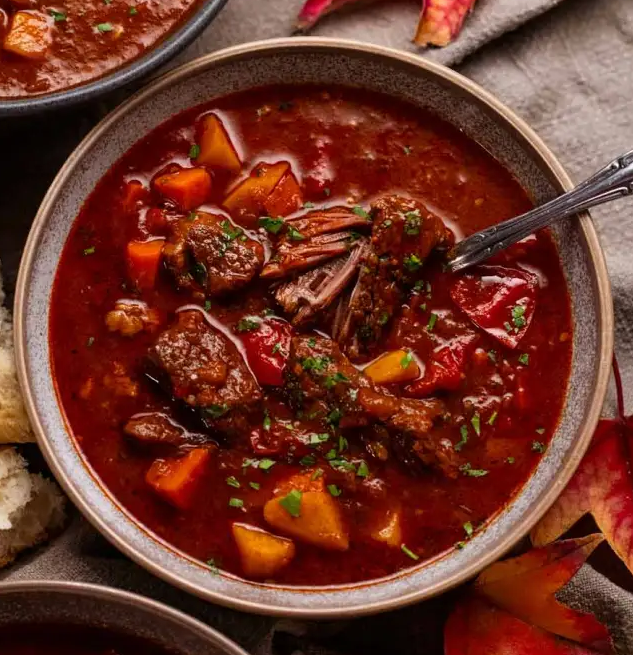
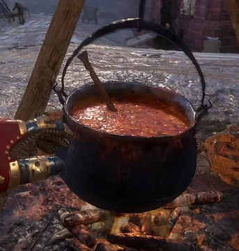

Traditional Hungarian Goulash

Description
Goulash is a slightly spicy stew containing meat and vegetables seasoned with paprika and other spices. Goulash orginates from Hungary and is a common dish eaten in many parts of central Europe. Goulash is most commonly made as a stew but can be made as a soup. It often uses beef, veal, lamb, or pork, as the meats and potatos as the vegetable. The preferred cuts of meat for goulash are the shank, shin, or shoulder. Note: Historically Hungarian accurate Goulash would not have contained potatoes, as they did not arrive in Europe until the 15th century. Tomato is also a later addition.
Ingredients
- 1/3 cup of vegetable oil
- 3 onions sliced
- 2 tablespoons of Hungarian sweet paprika
- 3 teaspoons of salt
- 1/2 teaspoon of ground black pepper
- 3 pounds of beef stew meat, cut into 11/2 inch cubes
- 11/2 cups of water
- 1 can tomato paste
- 1 glove garlic minced
Steps
- Heat oil in a large Dutch oven over medium heat. Cook and stir onions in oil until soft, 2 to 4 minutes. Remove onions and set them aside.
- Combine paprika, 2 teaspoons salt, and pepper in a medium bowl. Coat beef cubes in spice mixture, and cook in the onion pot until brown on all sides.
- Return onions to the pot with beef; pour in water, tomato paste, garlic, and remaining 1 teaspoon salt. Bring to a boil then reduce heat to low. Cover and simmer, stirring occasionally, until meat is tender, 11/2 to 2 hours
